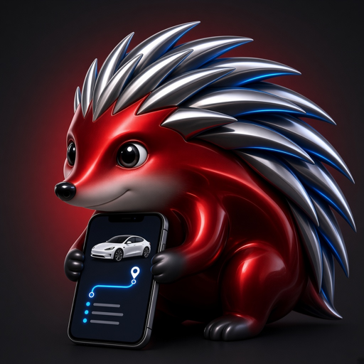
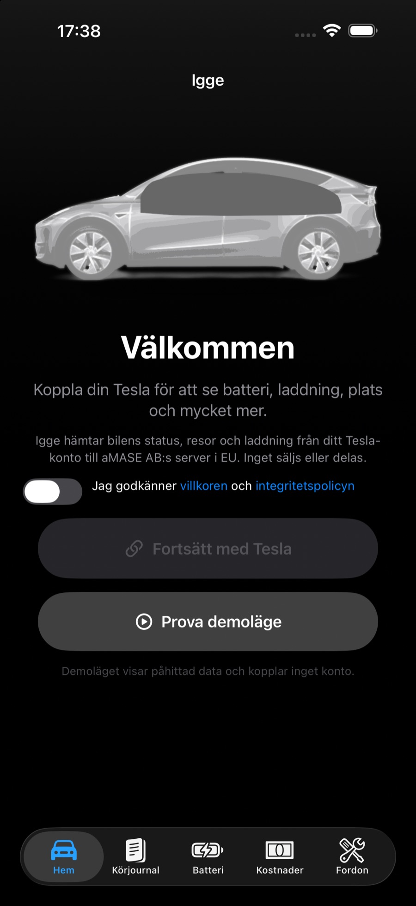
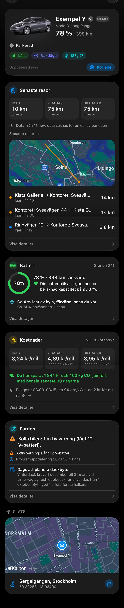
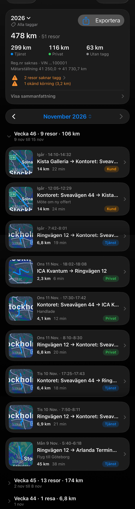
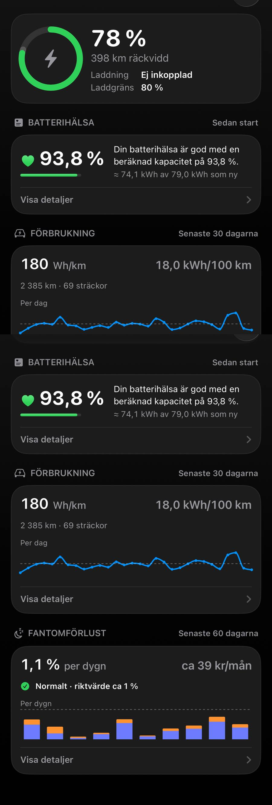
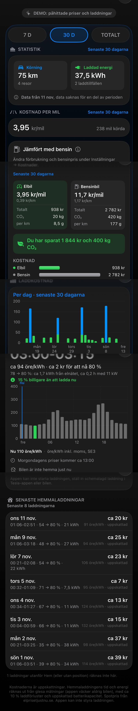
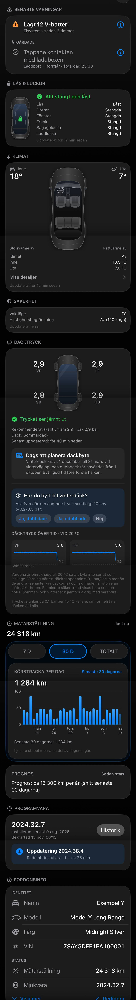
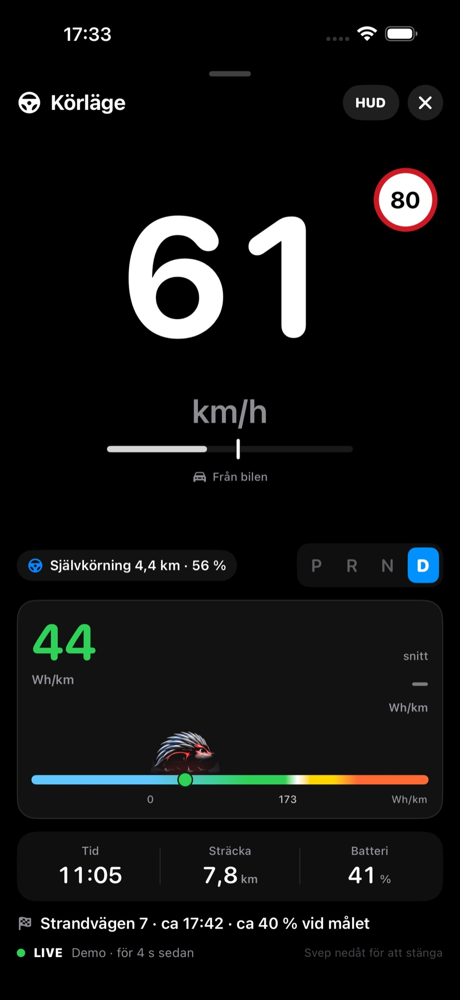
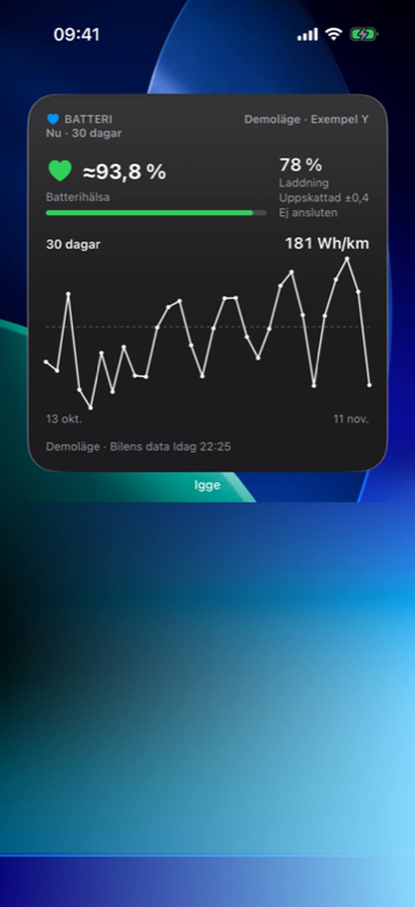

IggeSå använder du appen. Bilderna är från demoläget, med påhittade exempel. Priset för abonnemanget står i App Store när du köper.
Igge hämtar bilens status, resor och laddning från ditt Tesla-konto till aMASE AB:s server i EU. Inget säljs eller delas.

Hämta Igge i App Store. På välkomstskärmen kan du antingen koppla din Tesla eller prova demoläget.
Reglaget Jag godkänner villkoren och integritetspolicyn måste vara på innan knappen Fortsätt med Tesla går att trycka. Länkarna öppnar villkoren och integritetspolicyn. Demoläget kräver inte godkännandet.
Är du redan inloggad och villkoren har uppdaterats kommer en egen skärm, Villkor, innan du kan fortsätta. Den visas inte ovanpå Körläge och inte medan bilen körs. Öppnar appen i Körläge väntar frågan tills Körläge stängs.
Knappen heter Fortsätt med Tesla. Tesla frågar då om Igge får använda kontot. Appen ber om de här behörigheterna:
Teslas egen dialog formulerar samma sak med sina ord. Saknas en behörighet senare kan du logga ut från telefonen och logga in igen.
Första gången heter skärmen Välj bil. Senare lägger du till en bil under Inställningar, Bil och aktivering, med Lägg till bil. Finns det fler bilar byter du bil genom att trycka på namnet på Hem. Ett abonnemang har ett tak för hur många bilar som får ligga i Igge. Är taket nått tar du bort en bil innan du lägger till en ny.
Körjournalen och kommandona i Fordon kräver Igges virtuella nyckel. Under Bil och aktivering står om nyckeln är parad, saknas eller inte är kontrollerad. Saknas den finns knappen Para nyckeln i Tesla-appen. Para den en gång. Utan parad nyckel kan kommandon inte skickas, och körjournalen kan säga att nyckeln saknas.
Igge frågar om platsen när appen används, inte i bakgrunden. I Körläge används telefonens GPS till fartmätaren när värdet är färskt och tillräckligt säkert. Annars visas bilens fart. Platsen skickas inte till Tesla. I Navigera, som öppnas från Hem, används telefonens plats bara som reserv när bilen själv inte har en position.
Notiser är av tills du slår på dem. De som finns är lokala påminnelser: billigaste tiden att ladda, däckbyte, kalibrering av ett LFP-batteri och ny programvara. De väcker inte bilen. iOS frågar om tillåtelse första gången en sådan påminnelse slås på.
Prova demoläge visar påhittade bilar och påhittade siffror. Inget konto kopplas och inget skickas till en riktig bil. En rad överst säger Demoläge. Avsluta demo går tillbaka till välkomstskärmen och rör inte ett riktigt konto.
Varje Igge-konto har sin egen körjournal. Använder flera konton samma bil ligger journalerna kvar var för sig. Den som tar emot kördatan kan, under Bil och aktivering, slå på Dela nya resor och Dela äldre historik. Nya resor kopieras då till de andra Igge-kontona på bilen, från den dag kontot lades till. Äldre historik delas bara om den andra brytaren är på. Är du ägare men kördatan går till ett annat konto kan du trycka Ta över kördatan. Då går nya kördata till ditt konto. Den andra journalen ligger kvar.
Hem är en överblick utan eget periodval. Dra nedåt för att läsa om från servern. Det väcker inte bilen. Bara knappen Väck bilen gör det, och då efter en bekräftelse.

Överst syns bilens namn, modell och om den är online, sover eller offline. Finns flera bilar är namnet en väljare. Är värdena inte färska står hur gamla de är.
Korten under, i den här ordningen:
Kugghjulet på Hem öppnar inställningarnas huvudsida. Navigera söker mål och kan skicka ett valt mål till bilen.
Servern sparar resorna. Appen visar, redigerar och exporterar dem. Du ansvarar själv för att kontrollera journalen innan den används mot Skatteverket eller en arbetsgivare.

Öppna en resa för att sätta tagg, ärende, besökt och förare. En tagg per resa. Varje tagg räknas som tjänst eller privat i exporten. Privat och Tjänst kan byta namn men inte typ, och de kan inte tas bort. En tagg kan ha förval för förare, ärende och besökt. De fylls bara i tomma fält när taggen väljs.
I listan kan du svepa en resa åt höger eller vänster för att sätta den tagg du valt under inställningarna. Håll in en resa för att välja bland alla taggar. Då ändras bara taggen.
Automatisk tagg. En regel kan sätta tagg på resor som startar eller slutar inom 150 meter från en plats. Den gäller nya resor. Tidigare resor ändras bara om du trycker Tillämpa, och då bara om de saknar tagg och inte är låsta.
Korta stopp. Under inställningarna, Slå ihop stopp kortare än, väljer du 2, 5, 10 eller 15 minuter. Ett stopp kortare än så blir en resa i stället för två. Ändrar du tröskeln räknas olåsta resor från de senaste 30 dagarna om. En sammanslagen resa kan delas igen med Dela upp resa.
Lås resan när månaden är klar. En låst resa kan inte ändras eller slås ihop.
Export finns som CSV, detaljerad CSV eller PDF. PDF:en är till för att skrivas under. Perioden väljs i exporten. Registreringsnummer och företagsuppgifter, om du fyllt i dem, står i huvudet. Månaden överst i listan styr bara vad som visas, inte exportens period.
Fliken visar laddnivå, räckvidd, pågående laddning, batterihälsa, förbrukning och fantomförlust. Appen väcker inte bilen för att mäta. Är värdena gamla kan ett väckningskort ligga överst, samma fråga som på Hem.

Inställningarna för fliken öppnas med kugghjulet och heter Batteri. Där finns bland annat startperiod, LFP-påminnelse, förbrukning och fantomförlust.
Kostnaderna är uppskattningar. Hemmaladdning räknas från spotpris och de avgifter du angett. Supercharger följer Teslas laddhistorik. Appen kan inte starta eller styra laddningen.

Perioden följer det som finns: i dag, annars i går, annars 7 dagar, 30 dagar och i år. Du kan också välja period i fliken.
Kugghjulet öppnar Kostnader: elområde, hem, nät och påslag, jämförelsen med bensin, och om du vill bli påmind när det är billigt att ladda. Hem används också för att se om en laddning räknas som hemmaladdning.
Status för bilen. Styrning som hör till körningen sitter i Körläge, inte här. Väckning fungerar som på Hem och Batteri.

Kommandon, till exempel lås, frunk, bagagelucka, fönster, tuta och hastighetsbegränsning, kräver den virtuella nyckeln. Lås upp, frunk, bagagelucka, fönster, tuta och hastighetsbegränsning frågar alltid innan något skickas. Övriga kommandon frågar om Fråga innan kommandon skickas är på, under Bil och aktivering.
Körläget öppnas i helskärm när bilen börjar köra och appen är öppen, om Visa körläge automatiskt är på. Stänger du det öppnas det igen först vid nästa körning. Du kan också öppna det från kortet på Hem.

Fartmätaren är en stor siffra och en tunn stapel. Den använder telefonens GPS ungefär en gång i sekunden när värdet är färskt och säkert. Annars visas bilens fart. Under den syns energin just nu och snittet i Wh/km, och resans tid, sträcka och batteri. Finns ett mål visas gatan och ungefärlig tid, utan karta.
En hastighetsgräns kan visas som stöd. Den hämtas från öppna kartdata och kan vara fel, till exempel vid vägarbete eller en ny skylt. Det är alltid du som förare som följer vägmärken och trafikregler. Håll blicken på vägen. Ställ in det du behöver innan du kör, eller låt en passagerare sköta telefonen. Samma sak står i villkoren.
På hemskärmen: håll in, välj widgetgalleriet och Igge. Det finns två widgetar, Körjournal och Batteri. Båda finns i litet, mellan och stort format. I Redigera widget väljer du bil. För körjournalen väljer du också vad som visas, till exempel senaste resor eller en period. Större format kan lägga till körtid, snitt och energi.

Saknas underlag står att du ska öppna Igge. Finns inte bilen i appen just nu, till exempel för att du är utloggad, ber widgeten dig välja bil i Redigera widget. Den visar inte en annan bils värden.
Kugghjulet på Hem öppnar huvudsidan. Kugghjulet i Körjournal, Batteri, Kostnader eller Fordon öppnar den flikens sida, med en tillbaka-knapp till huvudsidan. Rubrikerna följer korten på fliken.
Ett nytt abonnemang kan börja med 14 dagar utan kostnad. Därefter gäller priset som visas i appen och i App Store när du köper. Betalning, förnyelse, uppsägning och återbetalning sköts av Apple. Abonnemanget förnyas tills du säger upp det hos Apple, senast ett dygn innan perioden tar slut. I appen finns Återställ köp och Hantera abonnemang.
När abonnemanget har tagit slut kan du läsa historiken och exportera körjournalen i 30 dagar. Ny körning sparas inte, och bilen hämtas inte från Tesla. Efter de 30 dagarna raderas uppgifterna. Mer står i villkoren och integritetspolicyn.
Allt det här ligger under Bil och aktivering.